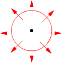

Energía de las ondas
1Por una cuerda cuya densidad
lineal es 4.5 g/m se propaga una onda transversal de amplitud 2 mm y frecuencia
100 Hz. Siendo la velocidad de propagación 150 m/s, calcula:
a) Densidad de energía b)
Intensidad de la onda
Solución
$$\begin{aligned}&\varepsilon=\frac{1}{2}\,\lambda\,A^2\,\omega^2=\frac{1}{2}\,\lambda\,(A\,2\pi f)^2\\[6pt] &\varepsilon=\frac{1}{2}\;4{,}5\cdot10^{-3}\ \mathrm{\frac{kg}{m}}\left(2\cdot10^{-3}\ \mathrm{m}\;2\pi\ \mathrm{rad}\;100\ \mathrm{\frac{1}{s}}\right)^2=\htmlData{pc-ac=ac12}{\boxed{3{,}55\cdot10^{-3}\ \mathrm{\frac{J}{m}}}}\end{aligned}$$
La suma de las energías de oscilación de las partículas contenidas en 1 m de cuerda es 3.55·10-3 J
b)
$$\begin{aligned}&I=\varepsilon\,c\\[6pt] &I=3{,}55\cdot10^{-3}\ \mathrm{\frac{J}{m}}\;150\ \mathrm{\frac{m}{s}}=0{,}532\ \mathrm{W}\end{aligned}$$
Otra forma de verlo: en un segundo la onda avanza 150 m, las particulas contenidas en este trayecto comienzan a oscilar lo cual requiere una energía de 0,532 J (150 m·3.55·10-3 J/m). Por tanto la onda tendrá que transportar 0.532 J cada segundo
$$\begin{aligned}&I=\varepsilon\,c\\[6pt] &I=3{,}55\cdot10^{-3}\ \mathrm{\frac{J}{m}}\;150\ \mathrm{\frac{m}{s}}=0{,}532\ \mathrm{W}\end{aligned}$$
Otra forma de verlo: en un segundo la onda avanza 150 m, las particulas contenidas en este trayecto comienzan a oscilar lo cual requiere una energía de 0,532 J (150 m·3.55·10-3 J/m). Por tanto la onda tendrá que transportar 0.532 J cada segundo
2Una onda sonora de 103 Hz tiene una intensidad de 10-4 W/cm2. Si la densidad del aire es 1.3 10-3 g/cm3, calcula la amplitud de oscilación (Velocidad del sonido 340 m/s)
Solución
Las unidades de la intensidad indican que se trata de una onda tridimensional
Intensidad de una onda:
$$I=\varepsilon\,c$$
Densidad de energía del medio tridimensional:
$$\varepsilon=\frac{1}{2}\,\rho\,A^2\omega^2$$
Combinando las dos expresiones resulta el sistema:
$$\begin{aligned}&\left.\begin{aligned}&I=\varepsilon\,c\\[4pt]&\varepsilon=\frac{1}{2}\,\rho\,A^2\omega^2\end{aligned}\right\}\xrightarrow{(1)}\varepsilon=\frac{I}{c}\\[6pt] &\frac{I}{c}=\frac{1}{2}\,\rho\,A^2\omega^2\;\rightarrow\;A=\frac{1}{\omega}\sqrt{\frac{2\,I}{c\,\rho}}=\frac{1}{2\pi f}\sqrt{\frac{2\,I}{c\,\rho}}\\[6pt] &A=\frac{1}{2\pi\,10^3\ \mathrm{Hz}}\sqrt{\frac{2\cdot10^{-4}\ \mathrm{W/10^{-4}\,m^2}}{340\ \mathrm{m/s}\;1{,}3\cdot10^{-6}\ \mathrm{kg/10^{-6}\,m^3}}}=\htmlData{pc-ac=ac14}{\boxed{1{,}07\cdot10^{-5}\ \mathrm{m}}}\end{aligned}$$
Cuando este sonido se propaga por el aire, las moléculas de este oscilan con una amplitud de 0.0107 mm en la misma dirección que la de propagación (Las ondas sonoras son longitudinales)
3A 10 m del foco la intensidad sonora es 2·10-11 W/cm2 y la amplitud de vibración es 2 mm Calcula a 20 m del foco: a) Intensidad de la onda b) Amplitud de vibración
Solución
Las unidades de la intensidad indican que se trata de una onda tridimensional
 |
Por las dos esferas pasa la misma energía por unidad de tiempo $$\begin{aligned}&I_1\,4\pi r_1^2=I_2\,4\pi r_2^2\\[6pt] &\frac{I_2}{I_1}=\frac{r_1^2}{r_2^2}\;\rightarrow\;I_2=I_1\left(\frac{r_1}{r_2}\right)^2\\[6pt] &I_2=I_1\left(\frac{1}{2}\right)^2=\frac{1}{4}\,I_1\\[6pt] &I_2=\frac{1}{4}\;2\cdot10^{-11}\ \mathrm{\frac{W}{cm^2}}=5\cdot10^{-12}\ \mathrm{\frac{W}{cm^2}}\end{aligned}$$ |
Al duplicarse la distancia al foco la intensidad se hace cuatro veces menor.
b)
Relación entre intensidad y amplitud de oscilación:
$$\left.\begin{aligned}&I=\varepsilon\,c\\[4pt]&\varepsilon=\frac{1}{2}\,\rho\,A^2\omega^2\end{aligned}\right\}\;\rightarrow\;I=\frac{1}{2}\,\rho\,A^2\omega^2\,c$$
Aplicando esta relación a las esferas 1 y 2:
$$\left.\begin{aligned}&I_1=\frac{1}{2}\,\rho\,A_1^2\,\omega^2\,c\\[4pt]&I_2=\frac{1}{2}\,\rho\,A_2^2\,\omega^2\,c\end{aligned}\right\}\;\rightarrow\;\frac{I_2}{I_1}=\left(\frac{A_2}{A_1}\right)^2$$
$$\begin{aligned}&\frac{1}{4}=\left(\frac{A_2}{A_1}\right)^2\;\rightarrow\;A_2=\frac{1}{2}\,A_1\\[6pt] &A_2=\frac{1}{2}\,2\ \mathrm{mm}=1\ \mathrm{mm}\end{aligned}$$
Al duplicarse la distancia al foco la amplitud se reduce a la mitad (Amortiguamiento de la onda)
Vamos a relacionar la intensidad con la amplitud de oscilación:
$$\left.\begin{aligned}&I=\varepsilon\,c\\[4pt]&\varepsilon=\frac{1}{2}\,\rho\,A^2\omega^2\end{aligned}\right\}\;\rightarrow\;I=\frac{1}{2}\,\rho\,A^2\omega^2\,c$$
Aplicando esta relación a las esferas 1 (10 m) y 2 (20 m):
$$\left.\begin{aligned}&I_1=\frac{1}{2}\,\rho\,A_1^2\,\omega^2\,c\\[4pt]&I_2=\frac{1}{2}\,\rho\,A_2^2\,\omega^2\,c\end{aligned}\right\}\;\rightarrow\;\frac{I_2}{I_1}=\left(\frac{A_2}{A_1}\right)^2$$
Con la relación intensidad-distancia obtenida en el apartado anterior resulta:
$$\begin{aligned}&\frac{1}{4}=\left(\frac{A_2}{A_1}\right)^2\;\rightarrow\;A_2=\frac{1}{2}\,A_1\\[6pt] &A_2=\frac{1}{2}\,2\ \mathrm{mm}=1\ \mathrm{mm}\end{aligned}$$
Al duplicarse la distancia al foco la amplitud de oscilación se reduce a la mitad.
4La intensidad de la luz solar
en la Tierra es de 1500 W/m2. Calcula:
a) Densidad de energía electromagnética
en la Tierra
b) Potencia radiada por el Sol
Distancia Tierra-Sol: 1.62·108
km
Solución
$$\begin{aligned}&I=\varepsilon\,c\\[6pt] &\varepsilon=\frac{I}{c}=\frac{1500\ \mathrm{W/m^2}}{3\cdot10^{8}\ \mathrm{m/s}}=\htmlData{pc-ac=ac16}{\boxed{5\cdot10^{-6}\ \mathrm{\frac{J}{m^3}}}}\end{aligned}$$
En cada m3 la energía del campo electromagnético oscilante es 5·10-6 J
b)
Hay que calcular la energía que fluye por unidad de tiempo através de una esfera con centro en el Sol y que pasa por la Tierra
$$I\cdot4\pi r^2=1500\ \mathrm{\frac{W}{m^2}}\;4\pi\,(1{,}62\cdot10^{11}\ \mathrm{m})^2=4{,}95\cdot10^{26}\ \mathrm{W}$$
Hay que calcular la energía que fluye por unidad de tiempo através de una esfera con centro en el Sol y que pasa por la Tierra
$$I\cdot4\pi r^2=1500\ \mathrm{\frac{W}{m^2}}\;4\pi\,(1{,}62\cdot10^{11}\ \mathrm{m})^2=4{,}95\cdot10^{26}\ \mathrm{W}$$
5Una fuente de 5 W emite una onda esférica. Calcula la intensidad de onda a 3 m del foco
Solución
 |
La intensidad es la energia que, por unidad de tiempo y de area, fluye a través de una esfera centrada en el foco y el cociente energía/tiempo es la potencia: $$I=\frac{E}{S\,t}=\frac{W}{S}=\frac{5\ \mathrm{W}}{4\pi\,(3\ \mathrm{m})^2}=4{,}42\cdot10^{-2}\ \mathrm{\frac{W}{m^2}}$$ |
6Una onda elástica de intensidad 2 W y período 5·10-3 s se propaga con velocidad de 200 m/s. Siendo la densidad lineal del medio 5·10-5 kg/cm, calcula la amplitud de oscilación
Solución
Las unidades de la intensidad indican que se trata de una onda unidimensional
Intensidad de una onda:
$$I=\varepsilon\,c$$
Densidad de energía del medio unidimensional:
$$\varepsilon=\frac{1}{2}\,\lambda\,A^2\omega^2$$
Combinando las dos expresiones resulta el sistema:
$$\begin{aligned}&\left.\begin{aligned}&I=\varepsilon\,c\\[4pt]&\varepsilon=\frac{1}{2}\,\lambda\,A^2\omega^2\end{aligned}\right\}\xrightarrow{(1)}\varepsilon=\frac{I}{c}\\[6pt] &\frac{I}{c}=\frac{1}{2}\,\lambda\,A^2\omega^2\;\rightarrow\;A=\frac{1}{\omega}\sqrt{\frac{2\,I}{c\,\lambda}}=\frac{T}{2\pi}\sqrt{\frac{2\,I}{c\,\lambda}}\\[6pt] &A=\frac{5\cdot10^{-3}\ \mathrm{s}}{2\pi}\sqrt{\frac{2\cdot2\ \mathrm{W}}{200\ \mathrm{m/s}\;5\cdot10^{-5}\ \mathrm{kg/m}}}=\htmlData{pc-ac=ac17}{\boxed{1{,}6\cdot10^{-2}\ \mathrm{m}}}\end{aligned}$$